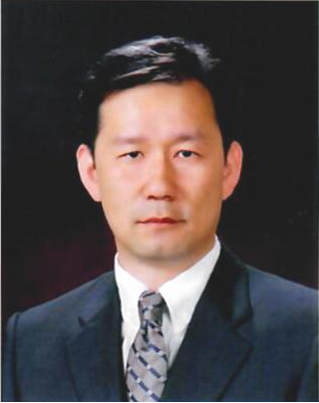
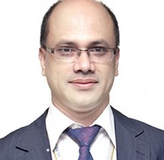

TCCE
2020
Login
Contact
TCCE 2020
(current)
Tracks
(current)
Schedule
17 December,2020
18 December,2020
Search
(current)
Keynotes

Prof. Tae-Seong Kim, Ph.D.
Keynote 1 : Title-link

Prof. Dr. Md. Sazzad Hossain
Keynote 2 : Title-link
Dr. M. Julius Hossain
Keynote 3 : Title-link
Prof. Ning Zhong
Keynote 4: Title-link